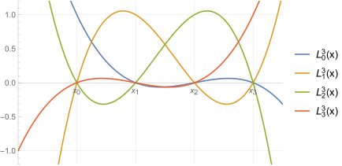

Lagrange Form of the Interpolation Polynomial
Contents
Lagrange Form of the Interpolation Polynomial¶
The Lagrange form of the interpolating polynomial was first formulated by Edward Waring in 1779 (sadly misattribution of scientific results is probably closer to the norm than it should be. Attempting to correct misattribution later can be next to impossible once a name has become firmly established). For centuries the Lagrange form was used primarily as a theoretical tool to help prove mathematical results and build intuition as it has a straightforward analytic form. Until fairly recently it was thought that changing the points \(x_i\) required recalculating the entire interpolant and that evaluating the interpolant was rather inefficient. However, it is now known that a slight variant, namely barycentric Lagrange interpolation, solves these problems rather straightforwardly.
Lagrange basis polynomials¶
To first step in constructing the Lagrange interpolating polynomial is to consider the basis polynomials:
Given \(x_0, x_1, ...,x_n\) the Lagrange basis polynomials for these points are
The key property of these polynomials is that when evaluated at one of our interpolation points,
If we have 4 points \(n=3\) and if the points are equally spaced the Lagrange basis polynomials look like the following:

Examining \(L_2^3(x)\), for example, we see it is indeed 0 at \(x_0,\,x_1,\) and \(x_3\) but is 1 at \(x_2\). Also note that all of these are cubic polynomials (degree 3 when we have 4 interpolation points).
Lagrange form of the interpolating polynomial¶
The Lagrange form of the interpolating polynomial given data values \((x_0,f(x_0)), (x_1,f(x_1)), (x_2,f(x_2)),..., (x_n,f(x_n))\) is now
Keep in mind that the \(f(x_i)\) is given (i.e. is a number) and so this is a sum over the Lagrange basis polynomials. By construction
So \(p_n(x)\) is an interpolating polynomial of degree \(\leq n\) through the specified points, as desired.
Any important question to ask is whether our interpolating polynomial \(p_n(x)\) is unique. If not, we would need to decide which one was “best” and perhaps this answer would depend on the circumstance. Fortunately we can show that our interpolating polynomial is unique.
How? Suppose not, then there is another polynomial, which we will call \(q_n(x)\) of degree \(\leq n\) with \(q_n(x_i)=f(x_i)\) for all \(i\) and where for general \(x\) we have \(p_n(x)\neq q_n(x)\). Now consider
which is another polynomial of degree \(\leq n\). Now if both \(p_n(x)\) and \(q_n(x)\) are interpolating polynomials through our \(n+1\) points we must have
which means \(d_n(x_i)\) has \(n+1\) roots (or zeros). However, the fundamental theorem of algebra tells us that a \(n-\)degree polynomial has at most \(n\) roots. The only way to resolve this contradiction is if \(d_n(x)\equiv 0\) implying that \(q_n(x)\equiv p_n(x)\) so that the polynomial is unique.
Note that while the polynomial is unique, we are free to rearrange it algebraically to construct a different form of the same polynomial. Why would you want to do this?
\(L_j^n(x)\) is a \(n\)’th degree polynomial and so requires \(\mathcal{O}(n)\) flops (we discussed this in conjunction with Horner’s algorithm in an earlier chapter). We have \(n+1\) of these to compute so direct use of the Lagrange form of \(p_n(x)\) would require \(\mathcal{O}(n^2)\) flops. This is inefficient for a polynomial that is still of degree \(n\).
If we decide to change or add another node at \(x_k\) it would appear that all the Lagrange basis polynomials would have to be recalculated.
It is for these reasons that Lagrange interpolating polynomials had limited practical (as opposed to theoretical) application for many years. However, these problems can be easily fixed as we discuss next.